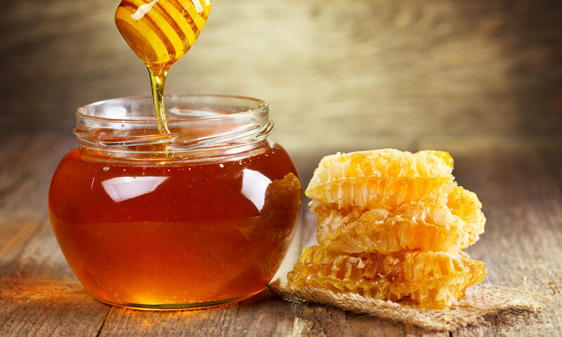

Nos Produits


Quelques infos en vrac…
- 🌿 Exploitation certifiée Bio (Ecocert depuis 2010)
- 🚜 En tant que producteurs, nous ne pouvons garantir l’intégralité de notre offre toute l’année (aléas climatiques, fabrication, etc.)
- 🯠Miels : 4 à 5 variétés disponibles en général. Les miels monofloraux dépendent des récoltes.
- 📠Confitures : 1000g de fruits pour 800g de sucre de canne bio.
- 🌱 Petits fruits rouges cultivés sans engrais chimiques (fumures organiques, désherbage thermique ou manuel).
La myrtille est cueillie à l’état sauvage (Monts du Forez).
Conditionnement
- Confitures : par 12 ou 2 x 6 pots
- Coulis : par 20 ou 2 x 10 bouteilles
- Miels : par 12 ou 2 x 6 pots
- Autres produits conditionnés sur demande
Tarifs & Livraison
- 💶 Tarifs TTC — paiement à la livraison
- 🚚 Transport : franco-port à partir de 450€ TTC
- 📦 Expédition possible via Mondial Relay — nous contacter pour plus d'infos
- 🕓 Délai de livraison : nous consulter